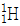
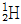
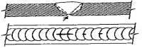
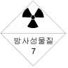

방사선비파괴검사기능사 (2014-04-06 기출문제)
1과목: 방사선투과시험법
1. 금속 내부 불연속을 검출하는데 적합한 비파괴검사법의 조합으로 옳은 것은?
- 와전류탐상시험, 누설시험
- 누설시험, 자분탐상시험
- 초음파탐상시험, 침투탐상시험
- 방사선투과시험, 초음파탐상시험
(정답률: 87%)

2. 수세성 형광침투액과 건식현상제를 사용하여 검사하는 방법을 표현한 것은?
- FA-D
- FB-D
- FA-S
- FB-S
(정답률: 77%)
3. 수세성 염색침투탐상검사에 습식현상제를 사용할 때의 시험순서로 옳은 것은?
- 전처리→침투처리→제거처리→건조처리→현상처리→관찰
- 전처리→침투처리→세척처리→현상처리→건조처리→관찰
- 전처리→침투처리→세척처리→유화처리→제거처리→현상처리→건조처리→관찰
- 전처리→세척처리→침투처리→현상처리→건조처리→관찰
(정답률: 73%)
4. 기포누설검사의 특징에 대한 설명으로 옳은 것은?
- 누설 위치의 판별이 빠르다.
- 경제적이나 안전성에 문제가 많다.
- 기술의 숙련이나 경험을 크게 필요로 한다.
- 프로브(탐침)나 스니퍼(탐지기)가 반드시 필요하다.
(정답률: 77%)
5. 코일법으로 자분탐상시험을 할 때 요구되는 전류는 몇 A인가? (단, L/D은 3, 코일의 감은 수는 10회, 여기서 L은 봉의 길이이며, D는 봉의 외경이다.)
- 40
- 700
- 1167
- 1500
(정답률: 50%)
6. 방사선투과시험과 초음파탐상시험을 비교 설명한 내용중 틀린 것은?
- 결함형상 판별에는 UT가 더 유리하다.
- 체적결함 검출에는 RT가 더 유리하다.
- 결함위치 판정에는 UT가 더 유리하다.
- 결함길이 판정에는 RT가 더 유리하다.
(정답률: 59%)
7. 누설을 통한 기체의 흐름에 영향을 미치는 인자가 아닌 것은?
- 기체의 분자량
- 기체의 점도
- 압력의 차이
- 기체의 색
(정답률: 83%)
8. 초음파탐상검사에 대한 설명으로 틀린 것은?
- 펄스반사법이 많이 이용된다.
- 내부조직에 따른 영향이 작다.
- 불감대가 존재한다.
- 미세균열에 대한 감도가 높다.
(정답률: 64%)
9. 전자기 원리를 이용한 비파괴검사법은?
- 와전류탐상시험
- 침투탐상시험
- 방사선투과시험
- 초음파탐상시험
(정답률: 89%)
10. 초음파탐상시험의 일반적인 특징이 아닌 것은?
- 반사법
- 투과법
- 경사각법
- 공진법
(정답률: 50%)
11. 자분탐상시험의 일반적인 특징이 아닌 것은?
- 시험체는 강자성체가 아니면 적용할 수 없다.
- 자속은 가능한 한 결함 면에 수직이 되도록 한다.
- 일반적으로 깊은 결함 검출이 곤란한다.
- 시험체 두께 방향의 결함높이와 형상에 관한 정보를 얻을 수 있다.
(정답률: 77%)
12. 방사선투과시험시 관용도가 큰 필름을 사용했을 때 나타나는 현상은?
- 관전압이 올라간다.
- 관전압이 내려간다.
- 콘트라스트가 높아진다.
- 콘트라스트가 낮아진다.
(정답률: 53%)
13. 와전류탐상시험의 탐상코일 중 외삽 코일과 같은 의미에 속하는 것은?
- 내삽코일
- 표면코일
- 프로브코일
- 관통코일
(정답률: 49%)
14. 원자핵의 분류중

와
는 무엇으로 분류되는가?- 동중핵
- 동위원소
- 동중성자핵
- 핵이성체
(정답률: 65%)
15. 용접부의 방사선투과검사를 하였을 때 촬영된 투과사진이 규정하는 상질을 가지고 있는지의 여부를 확인해야 하는데 이때 확인하여야 할 항목으로 가장 거리가 먼 것은?
- 계조계의 값
- 시험부의 사진농도
- 시험부의 유효길이
- 투과도계의 식별 최소선경
(정답률: 49%)
16. 두께20mm 용접품의 중심부에 기공이 있는 것을 확인하고자 할 때 비파괴검사 방법으로 옳은 것은?
- 액체침투탐상(PT)
- 자기탐상(MT)
- 누설탐상(LT)
- 방사선투과검사(RT)
(정답률: 77%)
17. 방사선투과사진에서 결함의 분류 도중 용입불량의 결함이 확인되어 결함의 길이를 측정하여 결함을 분류하였다. 다음중 잘못된 분류는 어느 것인가?
- 제2종 1류
- 제2종 2류
- 제2종 3류
- 제2종 4류
(정답률: 51%)
18. 방사선투과사진의 명료도(또는 선명도)에 영향을 주는 인자가 아닌 것은?
- 필름의 종류
- 초점-필름간의 거리
- 방사선 선질
- 침투시간 및 노출시간
(정답률: 36%)
19. 방사선투과시험시 필름을 수동현상할 때 최대효과를 얻기 위한 용액의 온도범위는?
- 12°C ~ 15°C
- 18°C ~ 22°C
- 24°C ~ 28°C
- 30°C ~ 40°C
(정답률: 69%)
20. 반감기가 75일인 10Ci의 Ir-192를 사용하여 2분간 노출하여 양질의 방사선투과사진을 얻었다. 75일 후에 같은 조건에서 동등한 사진을 얻고자 할 때 노출시간은 약 얼마이어야 하는가?
- 1.5분
- 4분
- 6분
- 15분
(정답률: 68%)
2과목: 방사선안전관리 관련규격
21. Ir-192 선원의 방사선 강도가 1m 떨어진 곳에서 2R/h일 때 방사선 강도가 2mR/h되는 곳은 선원으로부터 얼마 떨어진 곳인가?
- 약 100m
- 약 62m
- 약 32m
- 약 16m
(정답률: 32%)
22. X선발생장치에서 핀홀법으로 초점상을 촬영하는 주 이유는?
- 초점의 위치 결정
- 초점의 크기 결정
- 조사면의 선량분포
- X선의 에너지 분포
(정답률: 50%)
23. 감마선투과시험 장비에 사용하는 동위원소의 특성을 바르게 설명한 것은?
- 137Cs의 γ선 에너지는 1.33MeV이다.
- 60Co선원 1Ci는 1m 거리에서 0.37R/h이다.
- 192Ir에서 방출되는 γ선 중 존재비가 가장 큰 것은 0.31MeV γ선이다.
- 170Tm은 β방출체로서 투과시험에는 이용할 수 없다.
(정답률: 35%)
24. 방사선투과사진의 명료도에 영향을 미치는 기하학적 요인이 아닌 것은?
- 필름의 종류
- 선원의 크기
- 선원과 필름 사이 거리
- 증감지와 필름의 접촉상태
(정답률: 61%)
25. 방사선투과검사에 사용하는 연박증감지의 효과에 관한 설명으로 옳지 않는 것은?
- 필름의 사진 작용을 증대한다.
- 노출시간을 10배 이상 단축시킨다.
- 1차방사선에 비해 파장이 긴 산란방사선을 흡수한다.
- 1차방사선을 강화한다.
(정답률: 58%)
26. X선 발생장치의 관을 고진공 상태로 설계, 제작하는 이류로 가장 거리가 먼 것은?
- 고속전자의 에너지 손실을 방지하기 위하여
- 필라멘트의 산화 및 연소를 방지하기 위하여
- 전극간의 전기적 절연을 방지하기 위하여
- 열 발생을 방지하기 위하여
(정답률: 56%)
27. 용접금속이 국부적으로 뒤쪽으로 떨어져 나간 것으로 그림에서 나타내고 있는 용접부의 결함은 무엇인가?

- 파이프
- 용락
- 융합불량
- 용입부족
(정답률: 63%)
28. 다음 중 측정기기에 대한 설명이 잘못된 것은?
- TLD는 개인 피폭선량 측정용이다.
- 서베이미터는 교정하지 않아도 된다.
- 동위원소 회수시 서베이미터로 관찰해야 한다.
- 포켓도시미터로 선량률을 측정해서는 안된다.
(정답률: 71%)
29. 방사선 측정중 속중성자의 측정에 가장 적합한 기기는?
- Nal 신틸레이터
- 가스 전리계수기
- G.M 계수기
- 플라스틱 신틸레이터
(정답률: 42%)
30. 선량률을 감소시키기 위해 차폐체를 사용할 때, Ir-192에 대한 강의 반가층이 12mm 이면 선량율을 처음의 1/8로 감소시키려면 강의 두께는 몇 mm이어야 하는가?
- 13
- 26
- 39
- 52
(정답률: 59%)
31. 강용접 이음부의 방사선투과 시험방법(KS B 0845)에 의한 투과사진에서의 결함분류 중 결함길이를 결정하는 방법이 옳은 것은?
- 결함이 일정 면적 안에 존재할 때 면적 안의 가로길이를 결함길이로 한다.
- 결함길이는 제2종의 결함길이를 측정하여 결함길이로 한다.
- 둥근블로홀은 동일시험시야에 공존하는 점수의 총합을 결함길이로 환산한다.
- 텅스텐 혼입은 결함의 긴지름 치수를 결함길이로 한다.
(정답률: 43%)
32. 강용접이음부의 방사선투과시험방법(KS B 0845)에 의한 시험성적서 기록에 시험조건 관련 사용장치 및 재료 항목에 포함되지 않는 내용은 무엇인가?
- 방사선 투과장치명 및 실효 초점치수
- 필름 및 증감지의 종류
- 투과도계의 종류
- 시험체의 재질 및 두께
(정답률: 34%)
33. 강용접 이음부의 방사선 투과시험방법(KS B 0845)으로 강판의 맞대기 용접이음부 촬영시 투과도계와 필름간 거리가 식별 최소 선지름의 몇배 이상이면 투과도계를 필름 쪽에 둘 수 있는가?
- 5배
- 10배
- 15배
- 20배
(정답률: 66%)
34. 방사선안전관리 등의 기술기준에 관한 규칙에서 그림과 같은 내용물을 차량에 부착할 때 방사성 표지의 색상은?

- 글자는 백색 바탕에 노란색
- 글자는 백색 바탕에 검정색
- 글자는 노란색 바탕에 흰색
- 글자는 노란색 바탕에 검정색
(정답률: 40%)
35. 주강품의 방사선투과시험방법(KS D 0227)에 따라 호칭두께가 15mm인 제품을 검사하여 투과사진을 등급분류하려한다. 이 때 사진에 블로홀이 있는 것으로 판단되었을 때 시험시야의 크기는 얼마로 하여야 하는가?
- ø10mm
- ø15mm
- ø20mm
- ø30mm
(정답률: 41%)
36. 강용접이음부의 방사선투과시험방법 (KS B 0845)에서 투과사진 결함의 종별과 종류가 틀린 것은?
- 제1종- 둥근 블로홀 및 이에 유사한 결함
- 제2종- 가늘고 긴 슬래그 혼입, 파이프, 용입불량, 융합불량 및 이에 유사한 결함
- 제3종- 갈라짐 및 이와 유사한 결함
- 제4종- 수축공 및 이와 유사한 결함
(정답률: 50%)
37. 원자력안전법에서 정한 연간 유효선량한도로 옳은 것은?
- 일반인-5mSv
- 수시출입자-12mSv
- 운반종사자-30mSv
- 방사선작업종사자- 연간 100mSv를 넘지 않는 범위에서 5년간 300mSv
(정답률: 57%)
38. 티탄용접부의 방사선투과시험방법(KS D 0239)에 의한 투과사진의 흠집의 상 분류방법 중 모재의 두께 15mm인 용접부에서 산정하지 않는 흠의 치수규정은?
- 0.3mm 이하
- 0.4mm 이하
- 0.5mm 이하
- 0.7mm 이하
(정답률: 21%)
39. 방사선에 대한 단위환산이 틀린 것은?
- 1Sv = 100rem
- 1Gy = 100rad
- 1rad = 10-4J/kg물질
- 1R = 2.58 × 10-4C/kg공기
(정답률: 44%)
40. 알루미늄 주물의 방사선투과 시험방법 및 투과사진의 등급 분류 방법(KS D 0241)에서 촬영방법 중 촬영 및 현상처리 과정의 확실한 흐림이 나타나는 필름은 정기적으로 제거해야 한다고 규정하고 있다. 이 때 흐림의 농도는 몇 이하로 하는 것이 바람직하다고 규정하고 있는가?
- 0.2
- 0.5
- 2.0
- 3.0
(정답률: 34%)
3과목: 금속재료일반 및 용접 일반
41. 강용접이음부의 방사선 투과시험방법(KS B 0845)에 따라 두께 30mm강판의 맞대기 용접이음을 촬영하려고 할 때 어떤 계조계를 사용하여야 하는가?
- 15형
- 20형
- 25형
- 30형
(정답률: 43%)
42. 강용접이음부의 방사선 투과시험방법(KS B 0845)에 따라 내부필름 촬영방법으로 두께 20mm, 원둘레길이 180cm인 강관의 원둘레 용접이음을 촬영하고자 한다. 시험부에서 가로 갈라짐의 검출을 특히 필요로 하는 경우, 이 때 시험부의 유효길이는 얼마가 효율적인가?
- 90mm
- 150mm
- 250mm
- 300mm
(정답률: 49%)
43. 비정질합금의 제조법 중 기체 급랭법에 해당되는 것은?
- 단롤법
- 원심법
- 스퍼터링법
- 스프레이법
(정답률: 49%)
44. 압력이 일정한 Fe-C 평형상태도에서 공정점의 자유도는?
- 0
- 1
- 2
- 3
(정답률: 44%)
45. 두 가지 이상의 금속 또는 원소가 간단한 원자비로 결합되어 성분금속과는 다른 성질을 갖는 물질을 무엇이라 하는가?
- 공정 2원 합금
- 금속간 화합물
- 침입형 고용체
- 전율가용 고용체
(정답률: 52%)
46. 원자의 배열이 불규칙한 상태를 하고 있으며, 결정입계, 전위, 편석 등 결정의 결함이 없고 표면 전체가 균일하고 내식성이 우수한 합금은?
- 형상기억합금
- 초소성합금
- 초탄성합금
- 비정질합금
(정답률: 71%)
47. 7-3황동에 주석을 1%첨가한 것으로 전연성이 좋아 관 또는 판을 만들어 증발기, 열교환기 등의 재료로 사용되는 것은?
- 양은
- 델타 메탈
- 네이벌 황동
- 애드미럴티 황동
(정답률: 48%)
48. 금속조직학상으로 철강 재료를 분류할 때, 탄소함유량이 0.8 ~ 2.0%인 것은?
- 아공석강
- 아공정 주철
- 과공석강
- 과공정 주철
(정답률: 42%)
49. 금형 또는 칠 메탈이 붙어 있는 모래형에 주입하여 표면은 단단하고 내부는 회주철로 강인한 성질을 가지는 주철은?
- 칠드 주철
- 흑심 가단 주철
- 백심 가단 주철
- 구상 흑연 주철
(정답률: 58%)
50. 다음 중 대표적인 시효 경화성 합금은?
- 주강
- 두랄루민
- 화이트메탈
- 흑심가단주철
(정답률: 63%)
51. 탄성률이 좋아 스프링 등 고탄성을 요하는 재료로 통신기기, 계기 등에 사용되는 것은?
- 인청동
- 망간청동
- 니켈청동
- 알루미늄청동
(정답률: 45%)
52. 기지조직이 거의 페라이트로 된 것은?
- 스프링강
- 고망간강
- 공구강
- 순철
(정답률: 58%)
53. 다음의 재료 중 불순한 물질 또는 부식성 물질이 녹아 있는 수용액의 작용에 의해 표면 또는 내부에서 탈아연 되는 것은?
- 황동
- 엘린바
- 퍼멀로이
- 코슨합금
(정답률: 57%)
54. 고용융점 금속이 아닌 것은?
- W
- Ta
- Zn
- Mo
(정답률: 57%)
55. 피아노 선재, 레일 등을 제조할 때 사용되는 최경강인이 재료의 탄소함량으로 옳은 것은?
- 0.13 ~ 0.20%C
- 0.30 ~ 0.40%C
- 0.50 ~ 0.70%C
- 1.50 ~ 2.0%C
(정답률: 37%)
56. 복원중 (복원 오류로 문제 및 보기 내용이 정확하지 않습니다. 내용을 아시는분께서는 오류 신고를 통하여 내용 작성부탁 드립니다. 정답은 3번입니다.)
- 복원중
- 복원중
- 복원중
- 복원중
(정답률: 54%)
57. 조성은 30~32%Ni, 4~6% Co 및 나머지 Fe을 함유한 합금으로 20℃에서 팽창계수가 0(zero)에 가까운 합금은?
- 알민(almin)
- 알드리(aldrey)
- 알클래드(alclad)
- 슈퍼 인바(super invar)
(정답률: 68%)
58. 알루미늄 분말과 산화철 분말의 화학반응열을 이용하여 철 도레일의 맞대기 용접에 적합한 용접법은?
- 테르밋 용접
- TIG용접
- 탄산가스 아크 용접
- 일렉트로 슬래그 용접
(정답률: 51%)
59. 정격 2차 전류 200A이고 정격 사용률이 40%인 아크 용접기로 150A의 전류를 사용할 경우 허용사용률은 약 얼마인가?
- 71%
- 75%
- 81%
- 85%
(정답률: 28%)
60. 아크 용접법 중 용극식에 해당되지 않는 것은?
- 피복아크 용접법
- 서브머지드 아크 용접법
- 불활성가스 텅스텐 아크 용접법
- 이산화탄소 시일드 아크 용접법
(정답률: 47%)